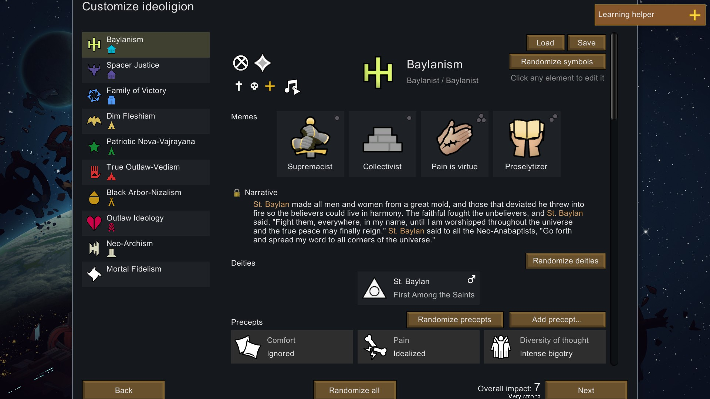

The Ideology DLC
The Ideology DLC was the second DLC released for Rim World on the 20.07.2021.It focuses on belief systems, social roles, rituals, hunts for ancient relics and cross-cultural interaction. It also adds Gauranlen trees that produce multipurpose working creatures called dryads and also adds a new win condition, the Archotech Nexus. The DLC managed to run out of Steam keys for www.rimworldgame.com buyers within a hour! With the Ideology expansion, each person in the game gets a belief system.

Ideologys
With the Ideology expansion, each person in the game gets a belief system. Belief systems define social roles for leaders, moral guides, and skill specialists. They invoke rituals from gentle festivals to brutal sacrifices. They guide preferences around food, comfort, love, technology, and violence. They venerate specific animals, desire different apparel and tattoos, and give access to different buildings and strategies. Everything is customizable. Make your own story of pirate nudist cannibals, blind undergrounder mole people, charitable ranching cowboys, machine-obsessed transhumanists, or rustic peaceful tribes who link with curious tree creatures. You'll hold unforgettable rituals - sick dance parties with pounding music, bountiful feasts of human flesh, beautiful skylantern festivals, ceremonial blindings, Christmas festivities around the tree, vicious gladiator duels, and more. As you grow powerful, you'll hunt for the venerated relics of your belief system in new multi-part quests. Penetrate ancient complexes full of diverse threats. And when you're successful and secure, you can seek transcendence beyond reality in the new, epic archonexus endgame. Ideology makes your story into your story more than ever before.
Memes
Each belief system is built around a collection of 1-4 core memes, where each meme represents a core idea in the belief system. By combining memes and changing the details of how they are expressed, you can create a staggeringly vast array of different belief systems.
Precepts
Each meme can give rise to a variety of different precepts. Each precept is a specific rule or guideline which affects a specific behavior or preference. The same meme won't always imply the same precepts - if you want fine control, you can edit and randomize precepts exactly the way you like. Some precepts relate to issues.
Gauralen Trees
A unique type of tree called the Gauranlen tree will occasionally sprout near your colony. These majestic orange trees have a symbiotic relationship with small creatures called dryads. The tree supports the dryads, and in return the dryads protect the tree. Each tree has a few dryads attached to it. A colonist can connect with a tree in a special ceremony. By pruning the tree over time, the colonist can strengthen the connection and gain the ability to influence its dryads.
Conversion
People can convert each other to new beliefs. You can assign wardens to convert prisoners, or use the special abilities of your moral guide. People will also spontaneously try to convert those around them. Those with proselytizing beliefs will do this much more intensely, which can lead to conflict, including fights between people. Depending on traits, some people are much easier to convert than others. You can bring everyone in your colony to one belief system, or try to keep a diversity of beliefs to capture the benefits of all of them.
Social Roles
Make use of your favorite colonists' strengths and skills by assigning them formal social roles. Each belief system defines special roles that believers can take on. The leader role gives inspirational speeches, buffs combat allies around them, encourages harder work, and plays a special role in some rituals. They can also accuse individuals of crimes and hold trials. The moral guide role supports the mental well-being and spiritual strength of your people, and leads many rituals including funerals, sacrifices, and more. They can preach health to the sick to speed up healing, provide counsel to sad colonists to lift their moods, reassure people in their beliefs, and convert non-believers to their own belief system. The specialist role gives better effectiveness at one primary skill and gains a special ability related to that skill. As a tradeoff, specialists become more focused on their specific skill and won't do some other work. You can assign many specialists.
Other new Features:
- Rituals
- Relic Hunts
- Additional Quests
- New Buildings
- Styles
- New apparel
- Archonexus endgame
Each belief system defines a collection of unique rituals. These player-controlled events are special gatherings that have a variety of impacts depending on how they are carried out. For example, a wild party in a massive dance hall with giant speakers may attract new recruits or lead to the discovery of an ancient complex full of loot. On the other hand, if you throw a party in a field with no music at all, you might not get the same benefits.
Every belief system holds some special objects as relics. It might be an ancient sword, a skull, a piece of armor, or anything else. Embark on multi-part quests to find and collect the relics that you believe in.
Ideology also adds some new quests not related to the relics
Belief systems unlock new buildings. Many of the buildings are used to support rituals.
Each belief system is associated with different aesthetic styles. Styles affect how many things look - rituals, furniture, floors, apparel, and art. Your colonists will enjoy being around things that match the styles of their belief system, and some may reject styles of other beliefs.
Beyond styles, belief systems can make people want to wear specific items of apparel. Some of these can be specific to certain social roles as well - a priest or moral leader may need to wear a special hat or robe.
As your colony grows wealthy, you'll have the opportunity to sell the whole thing and start anew with your favorite colonists and animals. In return, you'll receive a piece of a map that leads to the archonexus - a conduit through which an ancient machine superintelligence is said to affect the physical world...